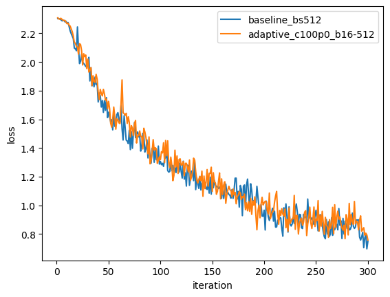
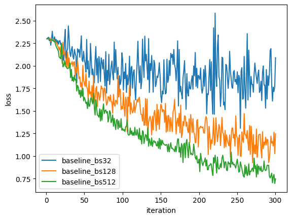
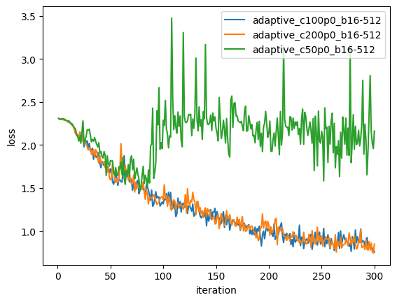
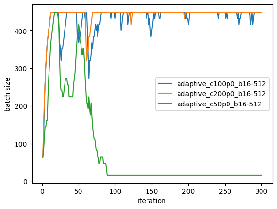
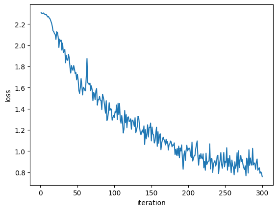
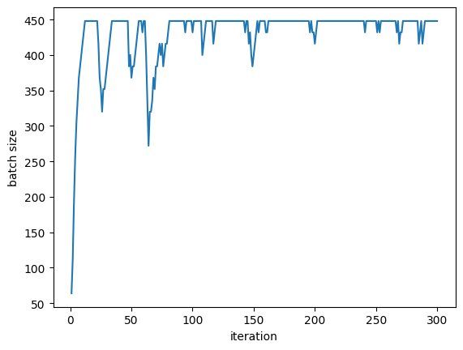
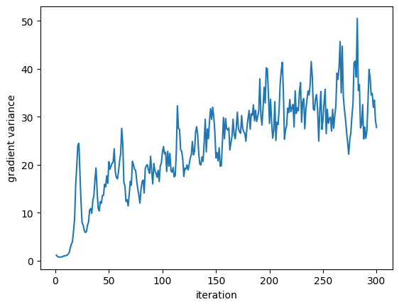
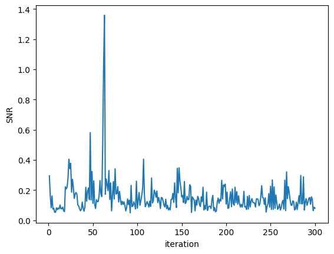

Variance-Controlled SGD: Adaptive Batch Size via Gradient Noise
March 2026
Why This Problem Matters
Stochastic gradient descent (SGD) is the workhorse of deep learning, but it suffers from a fundamental trade-off: larger batches reduce gradient noise but increase memory cost; smaller batches are cheaper but noisier and less stable.
This project asks: can we automatically adapt batch size during training to control gradient variance without manual tuning? The motivation is straightforward:
- Early in training, we can use small batches (cheap, exploratory).
- Later in training, larger batches stabilize convergence and reduce final noise.
- An adaptive policy based on observed gradient variance could strike this balance automatically.
This is particularly relevant for resource-constrained environments or large-scale training where batch size decisions impact both convergence and memory footprint.
The Method
We implement a data-driven batch-size controller that adjusts batch size based on gradient variance estimates. At each step \(t\):
- Sample \(m\) micro-batches, each of size \(b_{\text{micro}}\).
- Compute per-micro-batch gradients: \(g_1, g_2, \ldots, g_m\).
- Estimate the mean gradient and variance:
$$\bar{g}_t = \frac{1}{m}\sum_{i=1}^{m} g_i, \quad \hat{\sigma}_t^2 = \frac{1}{m}\sum_{i=1}^{m}\lVert g_i - \bar{g}_t \rVert^2$$
- Propose a new batch size via the control rule:
$$b_t^{\text{target}} = C \cdot \frac{\hat{\sigma}_t^2}{\lVert\bar{g}_t\rVert^2 + \epsilon}$$
- Apply smoothing and clamp to bounds: \(b_{\min} \le b_t \le b_{\max}\).
- Use \(\bar{g}_t\) as the gradient for the optimizer step.
Intuition: If gradient variance is high relative to the signal (gradient norm squared), increase batch size to reduce noise. If the signal is strong, maintain or decrease batch size to avoid over-smoothing.
Signal-to-Noise Ratio: We log
$$\text{SNR}_t = \frac{\lVert\bar{g}_t\rVert^2}{\hat{\sigma}_t^2 + \epsilon}$$
to track the quality of gradient estimates over time.
Experimental Setup
Dataset and Model
- Dataset: CIFAR-10 (32×32 RGB images, 10 classes)
- Model: Small CNN (3 conv layers + 2 FC layers)
- Optimizer: SGD with momentum (0.9)
- Learning rate: 0.05 (constant)
- Steps: 300 iterations
Baseline (Fixed Batch)
Three fixed batch sizes: 32, 128, 512. Same optimizer and learning rate, deterministic seeding.
Adaptive Policy
- Micro-batch size: 16 (used to estimate variance)
- Control constant \(C\): 50, 100, 200 (varied to tune responsiveness)
- Batch bounds: [16, 512]
- Smoothing: 0.8 (exponential smoothing on target batch size)
- Epsilon: 1e-8 (numerical stability)
Logging
Every iteration, we log: loss, accuracy, gradient norm, gradient variance, effective batch size, and SNR.
Results
Baseline (Fixed Batch)
Batch size 32:
Final loss: 2.0904
Final accuracy: 21.88%
Mean loss: 1.9460
Batch size 128:
Final loss: 1.2465
Final accuracy: 53.12%
Mean loss: 1.5027
Batch size 512:
Final loss: 0.7483
Final accuracy: 72.85%
Mean loss: 1.2541
Key finding: Fixed batch size of 512 achieves the best performance, confirming that larger batches stabilize training in this regime.
Adaptive Policy
C = 50:
Final loss: 2.1629
Final accuracy: 6.25%
Batch size: 288.64 → 16.00
C = 100:
Final loss: 0.7579
Final accuracy: 72.32%
Batch size: 395.52 → 443.84
C = 200:
Final loss: 0.8500
Final accuracy: 68.75%
Batch size: 415.68 → 448.00
Key findings:
- C = 50 fails: The policy forced batch size to collapse to the minimum (16), severely degrading learning. This shows that the control constant is sensitive and must be calibrated.
- C = 100, 200 succeed: Both maintain large effective batch sizes (395–448) throughout training and match or near the best fixed-batch baseline.
- Batch size increases over time: Both successful adaptive runs show modest growth from early to late phases, suggesting the controller is correctly identifying and maintaining stability in later stages.
Variance and SNR Evolution
For the best adaptive run (C = 100):
- Gradient variance (first 50 steps): 9.34
- Gradient variance (last 50 steps): 32.61
- SNR (first 50 steps): 0.159
- SNR (last 50 steps): 0.130
Interpretation: SNR decreases (stays low) in later phases because the large batch size effectively reduces stochastic noise but the signal also becomes smaller as the network converges. The absolute variance grows because we're using larger batches, which report accumulated loss surface variability.
Visual Results
Loss Curves: Baseline vs. Adaptive

Best fixed batch (512) vs. best adaptive (C=100). Nearly identical convergence profiles, demonstrating that the adaptive policy can match hand-tuned batch sizes.
Baseline Loss Over Iterations

All three baseline batch sizes. Larger batch sizes converge faster and to lower final loss.
Adaptive Loss Comparison

All three adaptive runs (C=50, 100, 200). Only C=100 and C=200 converge successfully; C=50 diverges due to excessive batch-size reduction.
Adaptive Batch Size Dynamics

Batch size over iterations for the three adaptive runs. C=100 and C=200 grow and stabilize around 400–450; C=50 collapses to minimum.
Individual Adaptive Run (C=100)

Loss vs iterations (C=100)

Batch size vs iterations (C=100)

Gradient variance vs iterations (C=100)

Signal-to-Noise Ratio vs iterations (C=100)
Key Takeaways
- Fixed larger batches are competitive: In this setting, simply using a large fixed batch (512) is hard to beat. Adaptive policies must be well-calibrated to match this.
- Control constant (C) is critical: Too small a \(C\) (e.g., 50) can lead to catastrophic batch-size collapse. This suggests that online variance estimation is sensitive and requires careful tuning or robust adaptation schemes.
- Successful adaptive runs match baselines: With \(C \in \{100, 200\}\), the adaptive policy maintains large batches and achieves final loss comparable to fixed batch 512.
- Practical implications:
- In resource-constrained settings (e.g., limited memory), starting with small batches and growing them adaptively is a viable strategy.
- For reproducibility, the control constant and smoothing hyperparameter must be tuned empirically on a validation set.
- Micro-batch variance estimates are noisy; robust control laws (e.g., PID, Kalman filtering) might improve stability.
- Future work:
- Couple adaptive batch size with learning rate schedules.
- Test on other datasets and architectures.
- Incorporate Hessian information for curvature-aware batch sizing.
- Compare with other adaptive methods (e.g., Adam, SAM).
Code and Reproducibility
All code is open-source and available at the project repository.
To reproduce results:
# Install dependencies
pip install -r requirements.txt
# Run baseline experiments
python experiments/run_baseline.py
# Run adaptive experiments
python experiments/run_adaptive.py
# Generate summary and comparison plots
python experiments/analyze_results.py
All logs are saved as CSV in logs/ and plots in plots/. The logs/summary.csv file aggregates all runs for easy comparison.
Summary Statistics
Experiment summary is available in the table below (or download summary.csv):
| Run |
Type |
Final Loss |
Mean Loss |
Final Accuracy |
Mean Batch Size |
| baseline_bs32 |
baseline |
2.0904 |
1.9460 |
0.2188 |
32.00 |
| baseline_bs128 |
baseline |
1.2465 |
1.5027 |
0.5312 |
128.00 |
| baseline_bs512 |
baseline |
0.7483 |
1.2541 |
0.7285 |
512.00 |
| adaptive_c50p0_b16-512 |
adaptive |
2.1629 |
2.1208 |
0.0625 |
80.69 |
| adaptive_c100p0_b16-512 |
adaptive |
0.7579 |
1.2782 |
0.7232 |
431.20 |
| adaptive_c200p0_b16-512 |
adaptive |
0.8500 |
1.2889 |
0.6875 |
440.32 |